Fluid Mechanics Course
Fluid Properties and Flow Characteristics
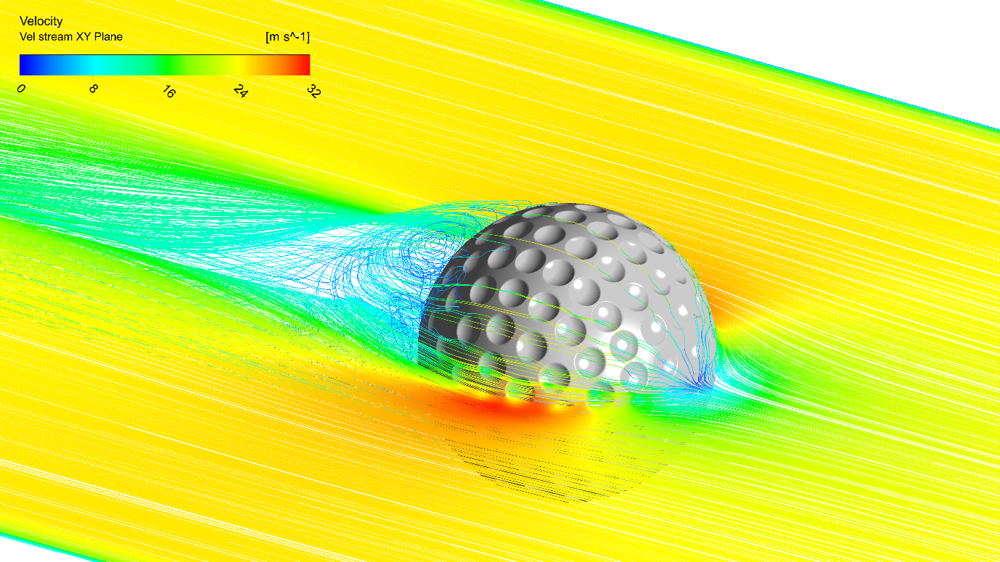
Francesco Ferri
AAU BUILD
Learning Objectives
- Understand fluid properties
- Explore how fluids behave
- Recognize assumptions and limitations
- Prepare for Bernoulli and Navier-Stokes equations
- Apply concepts to engineering problems
Why Fluid Mechanics?
Engineering Applications
- Hydrostatic loads on tanks, gates, and submerged structures
- Wind loads and wakes around buildings and bridges
- Wave, current, and buoyancy effects offshore
- Pipe, drainage, and hydraulic infrastructure
Other Applications
- Biological flows
- Geophysical flows
- Climate modeling
- Human physiology
Roadmap
What is a Fluid?
↓
Fluid Properties
↓
Flow Characteristics
↓
The rest of the course will build upon these fundamentals
What is a Fluid?
Mechanical Definition
A fluid continuously deforms under any applied shear stress.
Examples: Liquids, Gases, no-fixed shape
Solid
- Finite deformation
- Can sustain shear stress up to material failure
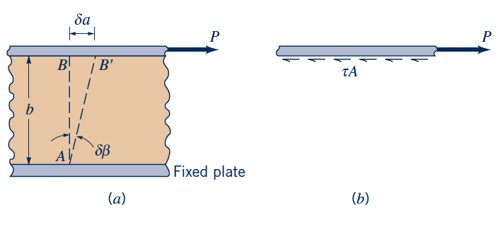
Fluid
- Continuous deformation
- Cannot sustain static shear stress
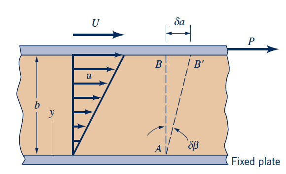
Examples
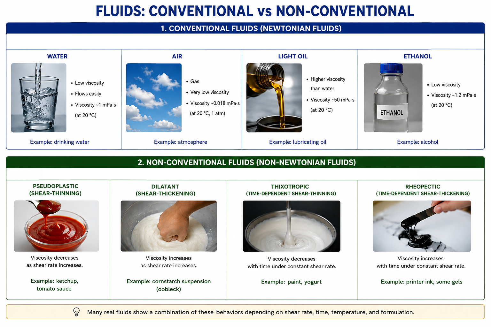
Think-Pair-Share
Is toothpaste a fluid?
- Yes
- No
- Depends on applied stress
Continuum Assumption
Microscopic View
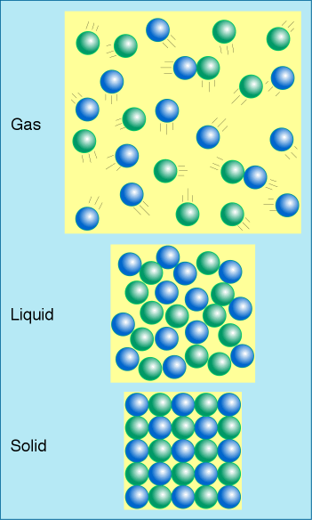
- Fluid consists of molecules
- Properties fluctuate microscopically
- Tracking molecules is impractical
Engineering Model
Molecules
↓
Averaging Volume
↓
Fluid Particle
↓
Continuum Field
How can we verify the continuum assumption?
Knudsen Number
- \(\lambda\): molecular mean free path
- \(L\): characteristic engineeringlength
- \(Kn < 0.01\): continuum modelling is appropriate
- \(Kn > 10\): continuum is not valid - rarefied gas
Fluid Particle (Material Volume Element)
A fluid particle is a very small volume (δV) that includes a number of molecules.
This volume must be:
- Large enough to contain a vast number of molecules, so that the statistical average is smooth and stable (eliminating random molecular fluctuations)
- Small enough to be infinitesimal compared to the macroscopic scale of the system (e.g., the size of an airplane wing or a pipe diameter), so that it can be considered a "point" in our differential equations
The fluid properties are estimated from the statistical average of the molecules within δV.
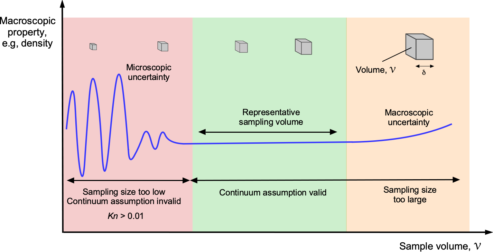
Fundamental Fluid Properties
fundamental characteristics of the fluid material itself that are independent of the flow's motion or the amount of fluid.
- Density (ρ)
- Viscosity (μ)
- Surface Tension (σ)
describe the state of the fluid and can change based on external conditions like volume, applied forces, etc.
- Pressure (p)
- Temperature (T)
- Compressibility (β)
Density
Liquids
- Small density changes
- Weak pressure dependence
- Weak temperature dependence
Derived quantities
- Specific weight: \(\gamma=\rho g\)
- Specific volume: \(v=1/\rho\)
- Specific gravity: \(SG=\rho/\rho_{ref}\)
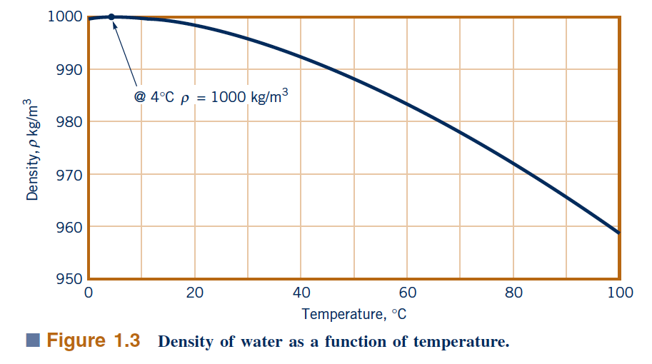
Gases
- Density strongly depends on pressure - direct relationship
- Density strongly depends on temperature - inverse relationship
Ideal Gas Law
\(p\): pressure, \(V\): volume, \(n\): number of moles,
\(R\): universal gas constant (8.314 J/(mol·K))
\(T\): temperature, \(\rho\): density, \(M\): molar mass
1 mole: 6.022 × 10²³ molecules
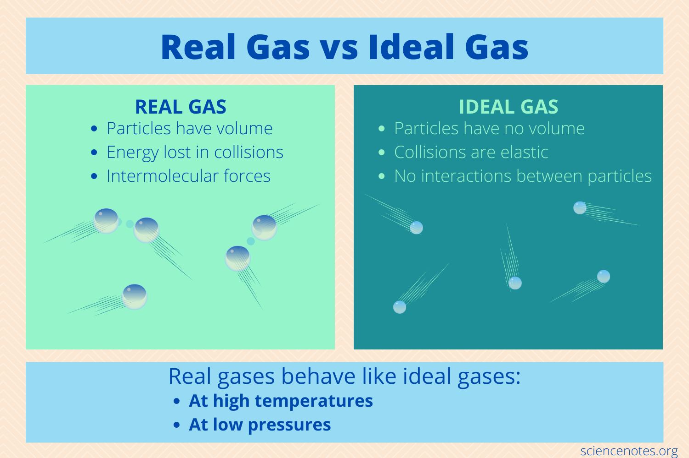
Pressure
Pressure (p):
force per unit area exerted by a fluid, [Pa]. $$ p =\frac{F}{A} $$- Scalar field
- The force associated with pressure acts normal to surfaces
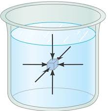
Vapor Pressure
The vapor pressure of a liquid is the pressure exerted by its vapor in equilibrium with the liquid at a given temperature.
Equilibrium condition between molecules leaving and returning to the liquid surface
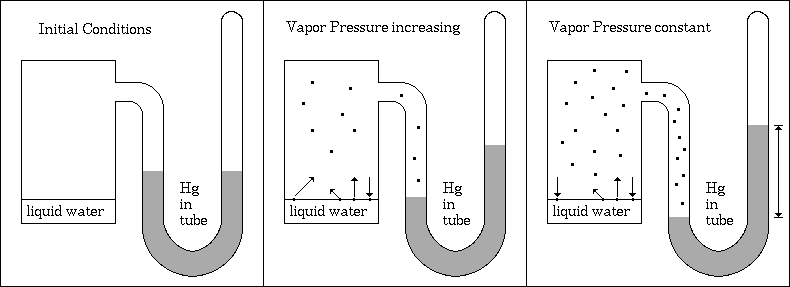
Depends strongly on temperature and fluid type
Important in certain fluid processes, such as cavitation.
Absolute and Gauge Pressure
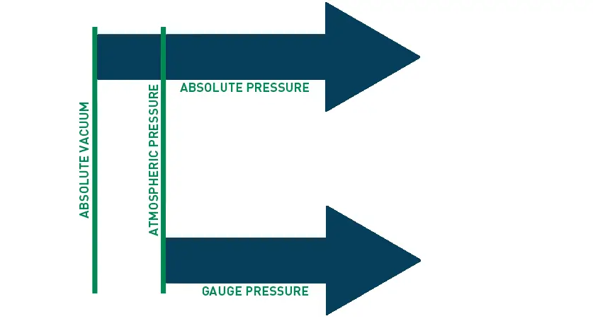
Absolute pressure: measured relative to a perfect vacuum
Gauge pressure1: measured relative to the ambient (local) atmospheric pressure
1 Measurements always done in gauge pressure unless otherwise specified.
Quick Quiz
Gauge pressure = -20 kPa
Absolute pressure?
Viscosity
Viscosity (μ):
measure of a fluid's resistance to deformation or flow, often described as "thickness" or "stickiness", [Pa·s].Shear Stress
Fluid
for small time interval \(\delta t\), the fluid layer moves a distance \(\delta a = U \delta t\)
shear strain is defined as $$ \delta \beta \approx tan(\delta \beta) = \frac{ \delta a}{b} = \frac{U \delta t}{b} $$
rate of shear strain is defined as $$ \frac{d\beta}{dt} = \frac{U}{b} = \frac{du}{dy} $$
if the shear stress increases, the rate of shear strain increases, the relation between shear stress and rate of shear strain is called the constitutive relation for the fluid. For a Newtonian fluid, the constitutive relation is linear:
Type of fluids (based on viscosity)
Newtonian Fluids
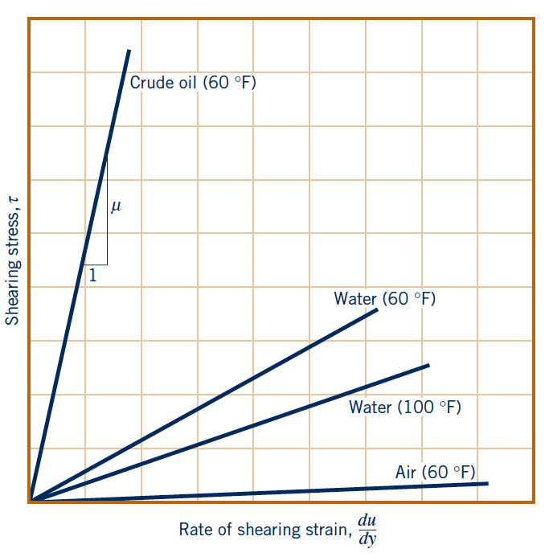
Non-Newtonian Fluids
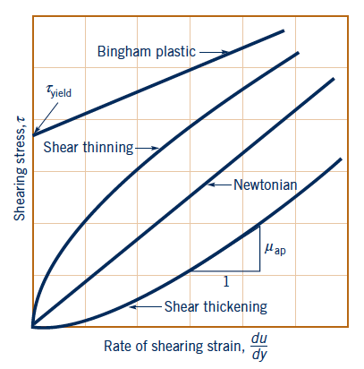
- Shear thinning: viscosity decreases with increasing shear rate
- Shear thickening: viscosity increases with increasing shear rate
- Bingham plastic: requires a minimum stress to initiate flow
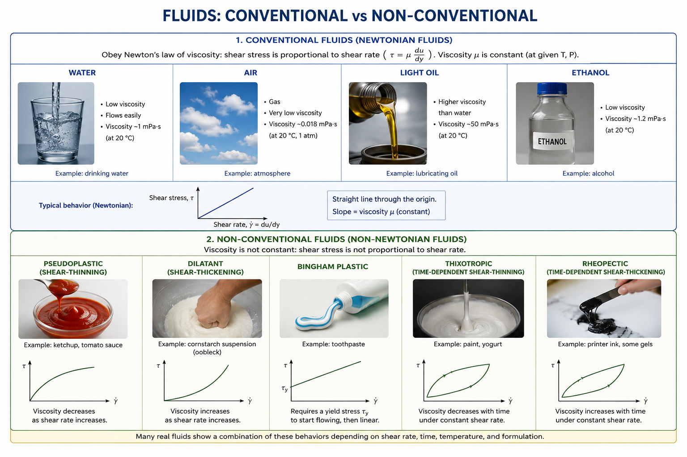
Question: Why doesn't paint drip from the brush?
Why Is Viscosity Important?
- Flow resistance
- Energy dissipation
- Laminar/turbulent transition
- Appears (complicates) in Navier-Stokes equations
Temperature
Temperature (K):
measure of the average kinetic energy of the molecules in a fluid.
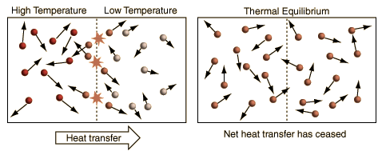
- Celsius °C
- Fahrenheit °F
- Kelvin K
- Rankine °R
Why Temperature Matters
Temperature affects several important fluid properties:
- Density
- Viscosity
- (Vapor) Pressure
- Phase change
- Heat transfer
- Expansion and Contraction
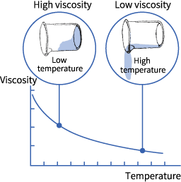
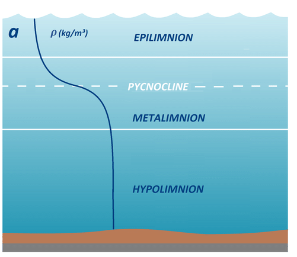
Surface Tension
Surface tension (σ):
measure the energy required to increase the surface area of a liquid due to cohesive forces between molecules, [N/m].
or tendency of liquid surfaces to minimize their area*, behaving like a stretched elastic membrane.
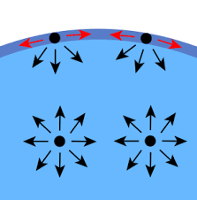
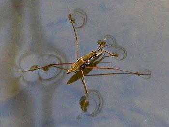
Compressibility
Compressibility [\(Pa^-1\)]:
measured via bulk modulus also referred as bulk modulus of elasticity
Bulk modulus
$$K=-V\frac{dp}{dV}$$Compressibility
$$\beta=-\frac{1}{V}\frac{dV}{dp}=\frac{1}{K}$$
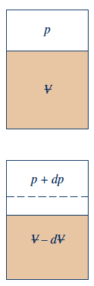
Flow Characteristics
Flow classes and why they matter
| Flow type | Short definition | Engineering benefit / justification |
|---|---|---|
| Steady / Unsteady | Properties at a fixed point do or do not change with time. | Simplifies design and control for pumps, pipelines, and turbines; unsteady effects matter in startup, shutdown, and wave loading. |
| Compressible / Incompressible | Density changes noticeably or remains nearly constant. | For liquids, incompressibility allows simpler flow-energy calculations; for gases, compressibility is necessary to predict pressure and speed changes. |
| Laminar / Turbulent | Fluid motion is smooth and layered, or chaotic and mixed. | Helps predict drag, mixing, heat transfer, and pressure losses in pipes, reactors, and aircraft flows. |
| Rotational / Irrotational | Fluid particles do or do not spin as they move. | Irrotational models give elegant analytical solutions for ideal flow; rotational flows are needed for vortex generation and wake analysis. |
| Viscous / Inviscid | Shear stresses are important or negligible. | Inviscid models are useful for first estimates and streamline theory; viscous effects are essential for drag, losses, and boundary layers. |
Steady vs Unsteady
Steady: no change with time at a fixed point
Useful for routine design calculations in pipelines and channels.
Unsteady: the flow field changes with time
Important for valve operations, waves, startup/shutdown, and transient loads.
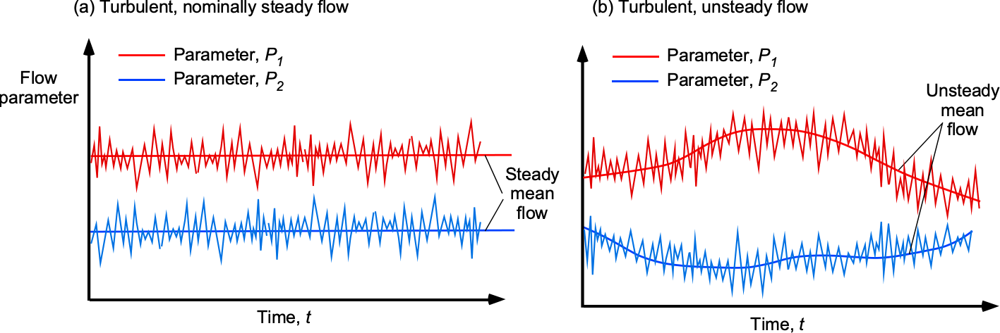
Compressible vs Incompressible
Compressible: density changes significantly with pressure/temperature.
Incompressible: density is nearly constant.
Why it matters:
- Gas pipelines and nozzles are often compressible
- Water flows are usually treated as incompressible
- The choice determines the governing equations and design assumptions
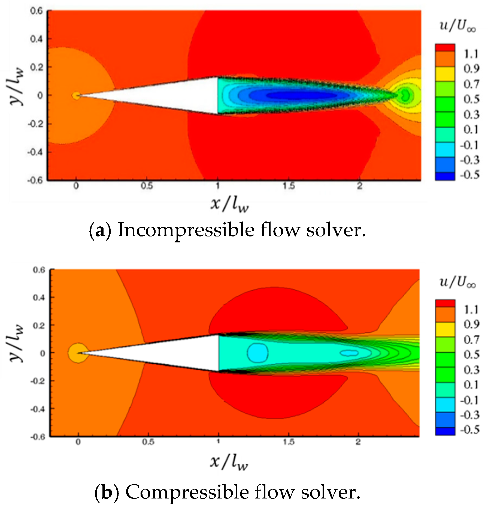
Laminar vs Turbulent
Laminar: smooth, ordered layers
Turbulent: chaotic mixing and eddies
Why it matters:
- Affects drag and pressure loss
- Affects mixing, heat transfer, and reaction rates
- Changes the design of pipes, vessels, and aerodynamics
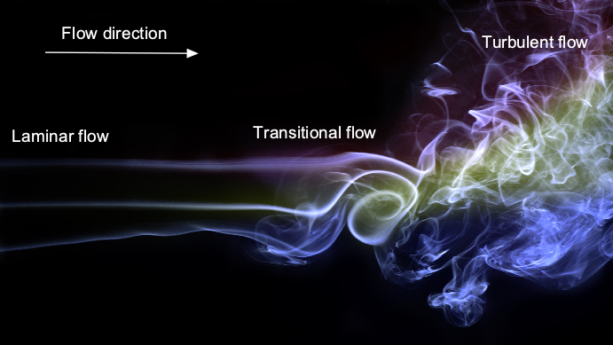
Classification Challenge
| Blood vessel | Usually laminar in small vessels, but pulsatile and unsteady |
| River | Often turbulent, with free-surface effects and variable discharge |
| Aircraft wake | Typically turbulent and unsteady, requiring aerodynamic optimization |
| Groundwater flow | Slow, incompressible, often treated as porous-media flow |
Key Takeaways
- Fluid deforms continuously under shear stress
- Continuum assumption is fundamental to replace molecular tracking
- Viscosity is a key fluid property in dynamic analysis, but density is key in static conditions
- Temperature affects fluid behavior significantly
- Flow classifications can be used to simplify analysis